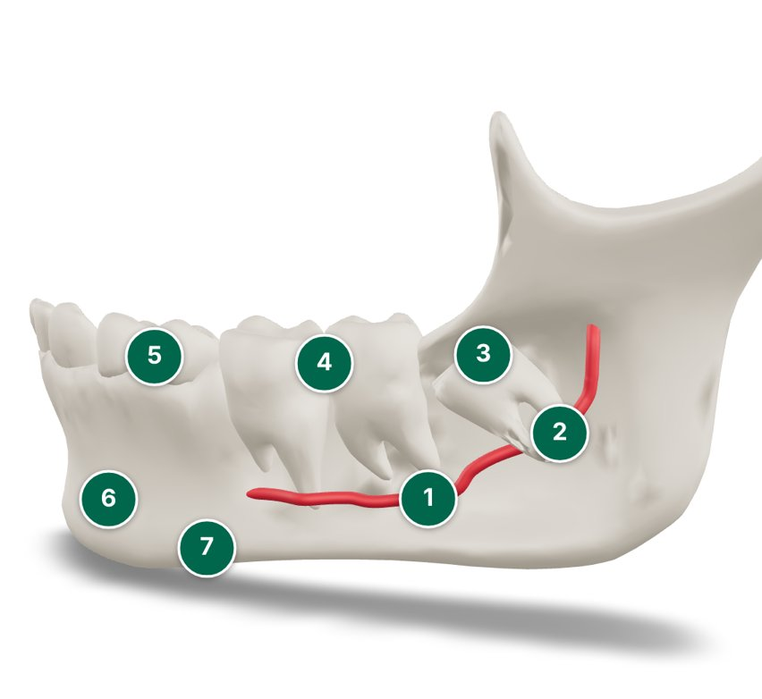
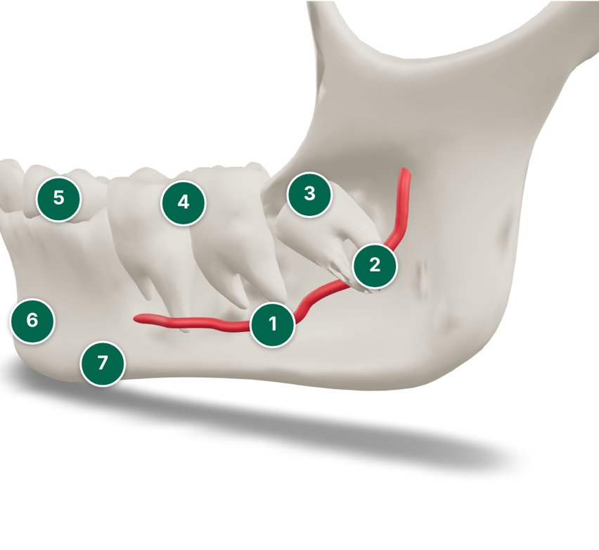

For the research team, not for participants. The numbers match the numbered dots on the webpage and the key on the information sheet and on the card for the 3D print.
How to place them
Print page 2 in colour on A4 sticker paper (gloss or matte), at 100% scale. Cut out one set of 1 to 7.
Choose the size that fits the print. 8 mm suits most prints; use 6 mm near the roots if space is tight.
Place each sticker where its dot is in the pictures below. For 1 (jaw nerve) and 2 (roots), place the sticker on the bone surface just over the part, or on the part itself if it can be seen and reached.
Use the same sticker places on every print used in the study, and photograph the labelled print for the study record.

Cheek side, whole jaw: places for 1 to 7.

Close-up of the wisdom tooth: places for 1 to 3.
The tongue (lingual) nerve is not part of the print, so it has no sticker. The text mentions it with a risk figure.